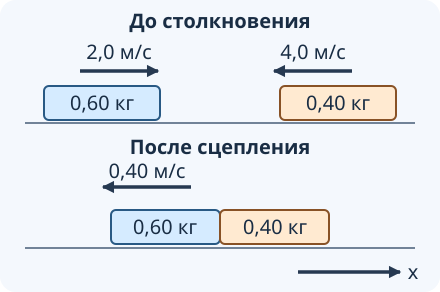

Решение задач по теме «Закон сохранения импульса»
Две тележки едут навстречу и сцепляются при ударе. Куда они поедут? Сравнить только скорости недостаточно: результат зависит и от масс, и от направлений движения. Научимся записывать импульс системы до и после взаимодействия и проверять, что получилось.
Система, ось и знаки
Выберите тела, импульс которых складываете. Если система состоит из двух тележек, силы их взаимодействия при ударе — внутренние. Трение со стороны дорожки — внешняя сила. За короткое столкновение на горизонтальной дорожке её импульс часто достаточно мал, чтобы им пренебречь.
Для двух тел, движущихся вдоль одной прямой, запишем:
Здесь \(v_{1x}\) и \(v_{2x}\) — проекции скоростей до взаимодействия, а \(u_{1x}\) и \(u_{2x}\) — после. Если ось направлена вправо, движению влево соответствует знак минус. Саму ось в ходе решения сохраняем.
Алгоритм решения
- Укажите тела системы и объясните, почему на выбранной оси можно пренебречь внешним импульсом за время взаимодействия.
- Выберите положительное направление. Запишите массы в килограммах, скорости в метрах в секунду. Например, \(250\ \text{г}=0{,}250\ \text{кг}\).
- Сложите проекции импульсов всех тел до взаимодействия и отдельно после него. При сцеплении подставьте одну общую скорость для обоих тел.
- Решите уравнение. Прочитайте знак ответа и подстановкой проверьте импульс после взаимодействия. Если нужно определить вид столкновения, отдельно сравните суммарную кинетическую энергию.
Разобранные примеры
1. Тележки встретились и сцепились

Куда поедут тележки
Первая тележка массой \(0{,}60\ \text{кг}\) движется вправо со скоростью \(2{,}0\ \text{м/с}\). Вторая массой \(0{,}40\ \text{кг}\) движется влево со скоростью \(4{,}0\ \text{м/с}\). После удара тележки сцепились. Внешним импульсом вдоль дорожки пренебрежём.
Направим ось вправо. Проекции скоростей до удара равны \(+2{,}0\ \text{м/с}\) и \(-4{,}0\ \text{м/с}\). У сцепившихся тележек одна проекция скорости \(u_x\):
Справа налево двигалась более лёгкая тележка, но модуль её импульса больше. Начальная сумма проекций равна \(1{,}2-1{,}6=-0{,}4\ \text{кг}\cdot\text{м/с}\). Общая масса равна \(1{,}0\ \text{кг}\), поэтому \(u_x=-0{,}40\ \text{м/с}\). Обе тележки движутся влево. Проверка даёт \(1{,}0\cdot(-0{,}40)=-0{,}40\ \text{кг}\cdot\text{м/с}\).
2. Первая тележка отскочила
Находим скорость второй тележки и определяем вид удара
Тележка массой \(0{,}50\ \text{кг}\) движется вправо со скоростью \(4{,}0\ \text{м/с}\), а тележка массой \(1{,}50\ \text{кг}\) покоится. После удара первая тележка движется влево со скоростью \(2{,}0\ \text{м/с}\). Ось направим вправо, внешним импульсом вдоль дорожки пренебрежём.
Получаем \(2{,}0=-1{,}0+1{,}50u_{2x}\) и \(u_{2x}=+2{,}0\ \text{м/с}\). Вторая тележка движется вправо. Проверка импульса после удара даёт \(-1{,}0+3{,}0=2{,}0\ \text{кг}\cdot\text{м/с}\).
Теперь проверим энергию. При вычислении \(E_k=mv^2/2\) квадрат скорости одинаков для движения вправо и влево.
В этой модели удар упругий: сохранились полный импульс и суммарная кинетическая энергия.
3. Конькобежцы оттолкнулись
Как тела движутся при нулевом полном импульсе
Два конькобежца массами \(40\ \text{кг}\) и \(60\ \text{кг}\) сначала стояли. После толчка первый поехал вправо со скоростью \(1{,}5\ \text{м/с}\). Система состоит из обоих конькобежцев. Импульсом внешних сил по горизонтали за время толчка пренебрежём.
При оси, направленной вправо, начальный полный импульс равен нулю. Поэтому
Второй конькобежец поехал влево. Их импульсы после толчка равны по модулю и противоположны, поэтому сумма по-прежнему равна нулю. Кинетическая энергия появилась за счёт работы мышц.
Что можно узнать из одного уравнения
Если после удара обе скорости неизвестны и тела движутся отдельно, уравнение сохранения импульса связывает две величины. Для численного ответа нужны дополнительные данные. Например, в задаче 2 проекция скорости одной тележки задана, а в задаче 1 обе тележки движутся вместе. При упругом ударе дополнительное уравнение даёт равенство кинетических энергий до и после столкновения.
Коротко о главном
- Сравнивайте сумму проекций импульсов всей выбранной системы до и после взаимодействия.
- Знак скорости показывает направление. При сцеплении складываются массы тел, а скорость у них общая.
- Для определения вида столкновения сравнивайте суммарную кинетическую энергию. Условие сохранения импульса проверяйте отдельно.
Самопроверка
Вопросы
1. Как изменятся знаки в уравнении из первого примера, если направить ось влево? Изменится ли направление реального движения? 2. Почему нулевой полный импульс системы совместим с движением входящих в неё тел? 3. Когда трение о дорожку существенно для решения задачи о столкновении?
Задачи для самостоятельной работы
Во всех задачах с тележками и шайбами пренебрегайте внешним импульсом вдоль линии движения за время взаимодействия, если в условии не сказано иначе.
- Тележка массой \(300\ \text{г}\) движется вправо со скоростью \(4\ \text{м/с}\), а тележка массой \(500\ \text{г}\) покоится. После удара они сцепляются. Найдите их общую скорость и направление движения.
- Тележка массой \(0{,}80\ \text{кг}\) движется вправо со скоростью \(1{,}5\ \text{м/с}\), а тележка массой \(0{,}40\ \text{кг}\) движется влево со скоростью \(3{,}0\ \text{м/с}\). Найдите общую скорость после сцепления. Сравните кинетическую энергию системы до и после удара.
- Шайба массой \(0{,}20\ \text{кг}\) двигалась вправо со скоростью \(6\ \text{м/с}\), а шайба массой \(0{,}30\ \text{кг}\) — влево со скоростью \(1\ \text{м/с}\). После соударения первая пошла влево со скоростью \(1{,}5\ \text{м/с}\). Найдите скорость второй шайбы после удара и по энергии определите вид столкновения.
- Две тележки массами \(1{,}5\ \text{кг}\) и \(2{,}0\ \text{кг}\) первоначально стоят. Пружина между ними разжимается, и более лёгкая тележка движется влево со скоростью \(0{,}80\ \text{м/с}\). Найдите скорость и направление движения второй тележки. Объясните, откуда взялась кинетическая энергия системы.
- Мяч массой \(0{,}40\ \text{кг}\) летит к неподвижной стене вправо со скоростью \(5\ \text{м/с}\) и отскакивает влево со скоростью \(3\ \text{м/с}\). Найдите изменение проекции импульса мяча при оси, направленной вправо. Назовите источник внешнего импульса вдоль этой оси за время удара.